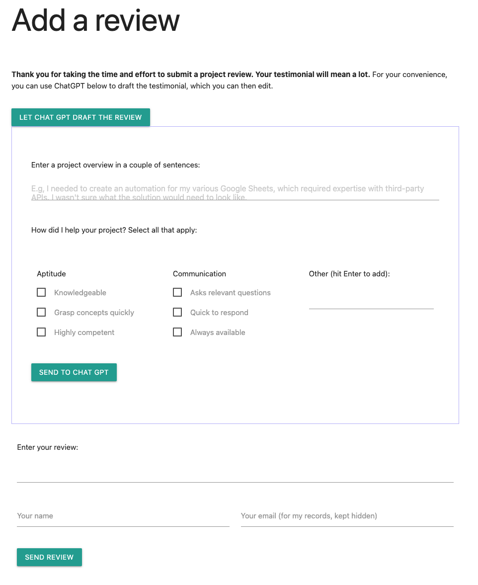

I have a reviews page on my site where I list client testimonials. I have a simple review submission form that clients populate with their review text, name, and email. When the form is submitted, I receive its information in a simple email message. I then copy/paste the information to my reviews page. Everything works fine except for one issue: often, clients don't know what to say in the review or how to structure their message. They want to help me but they are not sure what the review should say.
Luckily, ChatGPT can assist clients in drafting their personalized reviews. In this post, we'll see how to build a Google Apps Script-based system that accepts talking points from clients, converts them to a ChatGPT prompt, get a review draft from the AI, and enables the clients to edit and post their reviews. We'll get their review in an email message.
To get started, we need to create an HTML page like the one below. For your convenience, you can find the source code for the page here We will focus on adding in the client-side Javascript that will communicate with our web app.
Data flow
The review submission form includes a button "LET CHAT GPT DRAFT THE REVIEW." When the user clicks on the button, a new panel appears below, containing two questions. It asks the user to describe what they wanted to accomplish with the project. It then asks the user to indicate how I was able to help them with the project. I collected the checkbox items from my older reviews. They can also add their own features.
Next, they click on the "SEND TO CHAT GPT" button. This sends the information to a Google Apps Script web app that converts the information from the form to a prompt for a professional testimonial. The web app sends the prompt to ChatGPT and receives the draft testimonial, which it sends back to the Javascript in our page.
When the Javascript gets the draft review, it places it back in the form. The user can edit the text, add their name and email address and click "SEND REVIEW," which sends the information back to the web app. The web app sends me an email with the review, as well as any new features that the user added above.
Let's outline the tasks we need to accomplish:
Client-side Javascript
- Respond to "Let ChatGPT draft the review" button clicks
- Respond to New feature adds
- Create a generic POST request handling function
- Respond to "Send to ChatGPT" button clicks
- Respond to "Send review" button clicks
Web app
- Handle POST requests
- Handle ChatGPT
- Handle review submissions
Getting started with the code
By default, the ChatGPT panel should be hidden, so when you're done coding for it, go ahead and add a "hidden" attribute to the div with the id `container-chat-gpt`. For now, let's add the code to respond to button clicks. At the end of the HTML file, right above the closing `</body>` tag, add the following code:
<script>
document.addEventListener('DOMContentLoaded', (event) => {
// Our code will reside here...
});
</script>The coe above will ensure that everything we put inside the arrow function will execute after the DOM loads, so the Javascript won't attempt to access HTML elements that don't yet exist.
Respond to "Let ChatGPT draft the review" clicks
We need to add a click event handler for our first button. Add the following to the arrow function above:
// Respond to clicks on the "let chat gpt draft review" button.
document
.querySelector('#btn-toggle-chatgpt')
.addEventListener('click', (e) => {
const btn = e.target;
const container = document.querySelector('#container-chat-gpt');
const ta = document.querySelector('#ta-review');
if (btn.innerText === 'LET CHAT GPT DRAFT THE REVIEW') {
container.hidden = false;
btn.innerText = 'Close this panel';
if (ta.value === '') {
ta.value = '(Draft to be populated by ChatGPT)';
M.textareaAutoResize(ta);
}
} else {
container.hidden = true;
btn.innerText = 'LET CHAT GPT DRAFT THE REVIEW';
if (ta.value === '(Draft to be populated by ChatGPT)') {
ta.value = '';
}
}
});Above, we get our first button and attach an event listener to it. We use the text of the button to figure out its state: the first click will open the ChatGPT panel and the next click will close it.
We also get the text area of our review text and auto-populate it so that the user will know what's about to happen with ChatGPT.
Respond to New feature adds
The ChatGPT panel includes an "Other" input box that lets my client add other bullet points (AKA features) about how I was able to help them with their project. We need to add functionality so that when the user hits the enter key, the Javascript will convert the input box text to a checkbox that will be included with the rest of the selected features. Here's the code:
// Respond to user entering a new feature
document
.querySelector('#input-other-features')
.addEventListener('keydown', (e) => {
if (e.keyCode === 13) {
e.preventDefault();
const txt = e.target;
if (txt.value.trim().length === 0) {
return;
}
const template = document.querySelector(
'#template-feature-checkbox'
);
const clone = template.content.cloneNode(true);
clone.querySelector('span').innerText = txt.value;
clone.querySelector('input').checked = true;
document.querySelector('#div-other-features').appendChild(clone);
txt.value = '';
}
});Above, we add a 'keydown' event listener to the "#input-other-features input box. We check the key code and if it's 13 then we know that the enter/return key was pressed. In that case we use preventDefault to stop the browser from refreshing the page. We grab the input box value. We then grab an HTML template that resides in the markup. By default, the template doesn't show in the page, but we clone it, populate its span with the input box text, tick its box, so that the user doesn't need to do so, and add it to the markup. Lastly, we clear out the input box so that the user can add another feature.
When you look at the markup of the template, you'll notice that its input box has a class of "new-feature". We wil use this class later when we submit the final review to our web app, to get all the new features and list them in the email message. This will enable us to consider adding these new features to the ChatGPT option list for future reviewers.
Create a generic POST request handling function
Our client-side Javascript will need to communicate with our Apps Script web app twice: once to submit the info for ChatGPT, and the other to submit the final review. We can create a generic function that will push the data to the web app:
// Send POST requests to the webapp
async function postToAppsScript(body) {
const webappUrl = 'TBD';
const headers = new Headers();
headers.append('Content-Type', 'text/plain;charset=utf-8');
const req = new Request(webappUrl, {
method: 'POST',
redirect: 'follow',
headers,
body: JSON.stringify(body),
});
try {
const res = await fetch(req);
const jsn = await res.json();
return jsn.message.trim();
} catch (err) {
return err.message;
}
}Above, we create a function that will receive the payload object that we need to send to our web app. We create a "webappUrl" variable that we will populate after we deploy the app. Note that in our options object, we define "redirect: follow", which we need to do since the Apps Script web app returns from a different domain than the one we're POSTing into.
Also note that our function is "async" because we use "fetch" that is async and which we need to await. This will pause the execution of the function until our web app responds back.
Now we need to create two functions that will use our posting function.
Respond to "Send to ChatGPT" button clicks
Lets add the code that takes the project overview and selected features and send them to our posting function:
// Respond to clicks on send to chat gpt button
document
.querySelector('#btn-to-chatgpt')
.addEventListener('click', async function (e) {
e.preventDefault();
const btn = e.target;
btn.disabled = true;
const alert = document.querySelector('#alert-chatgpt');
alert.innerText = 'Sending to ChatGPT. Please wait...';
const checkedBoxes = document.querySelectorAll('input:checked');
const features = [];
checkedBoxes.forEach((box) =>
features.push(box.nextElementSibling.innerText)
);
const payload = {
overview: document.querySelector('#ta-overview').value,
features: features.join(', '),
};
const resp = await postToAppsScript(payload);
const review = document.querySelector('#ta-review');
review.value = resp;
M.textareaAutoResize(review);
btn.disabled = false;
alert.innerText =
'Your draft is below. Feel free to edit as needed.';
});Above, we respond to the ChatGPT submission clicks with a click event listener. We take the innerText of any span that follows a selected checkbox and joins them into a string. We also take the project overview text and send both to our function. Because our posting function is async, this event handler's function is also async. We await the posting, and when we get the draft review, we add it to our overview textarea.
Respond to "Send review" button clicks
The last step of our client-side Javascript is to respond to review submissions:
// Respond to review submissions
document
.querySelector('#review-submit')
.addEventListener('click', async function (e) {
e.preventDefault();
const btn = e.target;
btn.disabled = true;
const alert = document.querySelector('#alert-review');
alert.innerText = 'Submitting your review. Please wait...';
const features = [];
const checkedBoxes = document.querySelectorAll(
'input.new-feature:checked'
);
checkedBoxes.forEach((box) =>
features.push(box.nextElementSibling.innerText)
);
const review = document.querySelector('#ta-review');
const name = document.querySelector('#name');
const email = document.querySelector('#email');
const payload = {
review: review.value,
name: name.value,
email: email.value,
features: features.join(', '),
};
const resp = await postToAppsScript(payload);
btn.disabled = false;
alert.innerHTML = `${resp} Home`;
review.value = '';
name.value = '';
email.value = '';
});Above, we take the review draft, name, and email from the HTML elements. We also get all the new-feature selected checkboxes and get their respective span's innerText. We Send it to our posting function and reset the submission form when we get back a response.
Ok, time to create our Apps Script web app. Open the IDE and access the Code.gs file.
Handle POST requests
Let's write the function that Apps Script will execute automatically, whenever our client-side posting function POSTs to the app:
function doPost(e) {
const {overview, features, review, name, email} =
JSON.parse(e.postData.contents);
if (overview && features) {
return getChatGPT(overview, features);
}
if (review && name) {
return alertNewReview(review, name, email, features)
}
return ContentService.createTextOutput(
JSON.stringify({ status: 'failure', message: 'Data is missing' })
).setMimeType(ContentService.MimeType.JSON);
}Above, we attempt to extract all of the attributes that the client-side code can pass to our webapp by parsing e.postData.contents. We call the right function and return its own return based on the availability of the data.
Handle ChatGPT
Let's call ChatGPT with our prompt:
function getChatGPT(overview, features) {
const scriptProps = PropertiesService.getScriptProperties();
const key = scriptProps.getProperty('chatGptApiKey');
const apiUrl = 'https://api.openai.com/v1/completions';
const options = {
method: 'post',
headers: {
Authorization: `Bearer ${key}`,
'Content-Type': 'application/json',
},
muteHttpExceptions: true,
payload: JSON.stringify({
prompt: `Write a professional testimonial for Ben
on behalf of a client for whom Ben just completed
a Google Workspace automation project. The client
described the project as follows: "${overview}".
Make sure to include in the testimonial the
following points that the client highlighted about
Ben and his work: "${features}".`,
model: 'text-davinci-003',
temperature: 1,
max_tokens: 150,
}),
};
const response = UrlFetchApp.fetch(apiUrl, options);
const content = response.getContentText();
if (!response.getResponseCode().toString().startsWith('2')) {
console.log(content);
return null;
}
const jsn = JSON.parse(content);
if (!jsn.choices || jsn.choices.length === 0) {
console.log(jsn);
return null;
}
return ContentService.createTextOutput(
JSON.stringify({ status: 'success', message: jsn.choices[0].text })
).setMimeType(ContentService.MimeType.JSON);
}Above, we get our OpenAI API key from our script property. To learn how to get the key and store it there see this blog post. We then create the options object that includes the ChatGPT prompt. We embed the project overview and features in the prompt. We call the AI and parse out the text from its response.
Handle review submissions
Let's finish things off with the last function:
function alertNewReview(review, name, email, features) {
let body = `A new website review has been submitted:
From: ${name}
Email: ${email}
Review: ${review}`;
if (features) {
body += `
${name} included the following new features: ${features}`
}
GmailApp.sendEmail(
'your_email_address',
'Heads up: New website review submitted',
body
);
return ContentService.createTextOutput(
JSON.stringify({ status: 'success',
message: 'Your review has been saved.
Thank you so much for submitting it!'})
).setMimeType(ContentService.MimeType.JSON);
}Above, we use the user's name, email, and review text to form the body of our email. If there are new features then we append them to the body. We then send the email to your email address and return the message that the client-side Javascript renders under the submit button.
At this point, you need to deploy the web app and make it available to "Anyone". Copy its deployment url and paste it in the client-side code for the "webappUrl" variable. That's all there's to it.
Happy reviewing!